Home / Past papers / MLP End Term / this paper
IIT M DIPLOMA FN1 EXAM ETD1 11 Dec 2022 - 11 Dec 2022
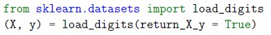
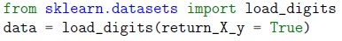
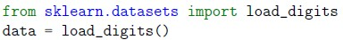
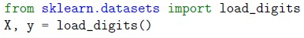
- AUC stands for Area Underneath the Curve.
- A completely effective classifier is a diagonal line, and it will have an AUC of0.5.
- The larger the value of AUC, the more effective the classifier.
- An AUC of 1 indicates a perfect classifier, which means it gets all the 1scorrectly classified, and doesn’t misclassify any 0s as 1s.
- None of these.
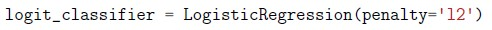
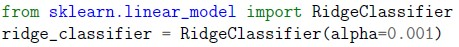
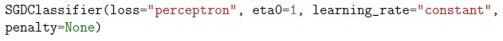
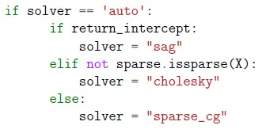
- hinge but quadratically penalized
- logistic regression
- linear SVM
- None of these
- GaussianNB
- ComplementNB
- CategoricalNB
- None of these
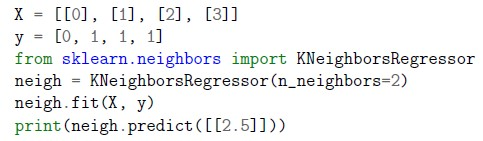
Which of the following options represents the correct output for the following block of code?- [0.]
- [0.5]
- [1.5]
- [1.]
- Statement 1 is correct but statement 2 is incorrect.
- Statement 1 is incorrect but statement 2 is correct.
- Statement 1 and statement 2 both are incorrect.
- Statement 1 and statement 2 both are correct.
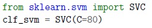
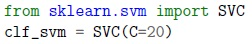
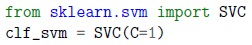
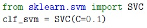
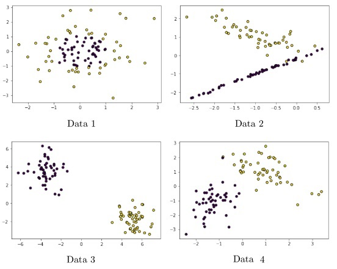
Consider the following scatter plots of four different input datasets: Which data will be classified better using gaussian rbf kernel?- Data 4
- Data 3
- Data 1
- Data 2
- 1, 3, 5
- 1, 3
- 3, 5
- 2, 4
- 1, 3, 4
- 1, 2, 4
- It creates only two new children nodes always.
- It can create two or more new children nodes always.
- It depends on the cardinality of the categorical feature.
- It depends on the scale of the numerical feature.
- Both statement 1 and 2 are correct.
- Statement 1 is correct but statement 2 is incorrect.
- Statement 1 is incorrect but statement 2 is correct.
- Both statement 1 and 2 are incorrect.
- Centroid Based Clustering
- Distribution-based Clustering
- Density-based Clustering
- Connectivity-Based Clustering
- HashingVectorizer does not store vocabulary, its object takes less spacecompared to CountVectorizer
- CountVectorizer does not store vocabulary, its object takes less spacecompared to HashingVectorizer
- HashingVectorizer alleviates any dependence with function calls performed onthe previous chunk of data in case of incremental learning
- CountVectorizer alleviates any dependence with function calls performed onthe previous chunk of data in case of incremental learning
- Iteratively train the model over a large dataset
- Implement batch gradient descent
- Update half of the weight parameters in each epoch.
- Tracking progress of the model in each iteration.
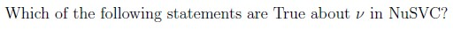
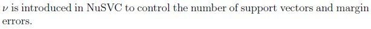
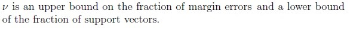
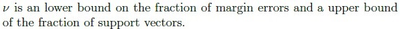
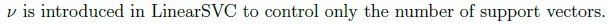
- Number of features
- Number of minimum samples to split
- Height of the tree
- Diameter of the tree
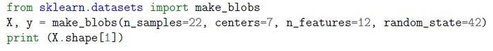
Enter the output (up to 2 decimal points) for the following block of code.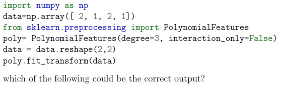
Consider the following code snippet:- array([[1., 2., 1., 4., 2., 1.], [1., 2., 1., 4., 2., 1.]])
- array([[1., 2., 1., 4., 2., 1., 4., 4., 2., 1.], [1., 2., 1., 4., 2., 1., 4., 4., 2., 1.]])
- array([[1., 2., 1., 2.], [1., 2., 1., 2.]])
- array([[1., 2., 1., 4., 2., 1., 8., 4., 2., 1.], [1., 2., 1., 4., 2., 1., 8., 4., 2., 1.]])
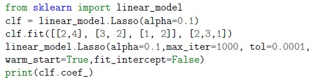
Which of the following is likely to be the correct output of the code given below?- [0.85,0.1,0.05]
- [2,3,1]
- [0.85,0]
- There are some mistakes in the 3rd /4th line of code, hence it will produceerror.
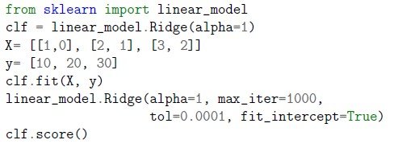
Which of the following is likely to be the correct output of the code given below?- 5
- 99
- Given code will produce an error
- 0.96


- Statement 1 is correct but statement 2 is incorrect.
- Statement 1 is incorrect but statement 2 is correct.
- Statement 1 and statement 2 both are incorrect.
- Statement 1 and statement 2 both are correct.
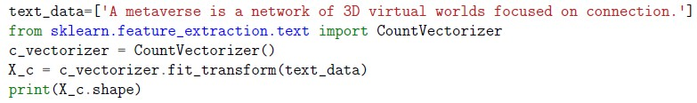
Which of the following options represents the correct output for the following block of code?- (11, 1)
- (1, 11)
- (10, 1)
- (1, 10)
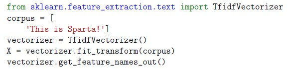
Which of the following options represents the correct output for the following block of code?- array([’is’, ’sparta’, ’this’], dtype=object)
- array([’is’, ’sparta’, ’this’,’ !’], dtype=object)
- array([ ’sparta’, ’this’,’ !’], dtype=object)
- array([’sparta’], dtype=object)
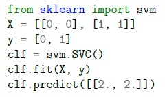
Which of the following options represents the correct output of the following block of code?- array([2])
- array([1.5])
- array([1])
- array([0])
- Perform one hot encoding followed by training with LinearRegression model(from sklearn.linear_model).
- Perform standard scaling followed by training with KNeighborsRegressormodel (from sklearn.neighbors).
- Perform min-max scaling followed by training with DecisionTreeRegressormodel (from sklearn.tree).
- Perform min-max scaling followed by training with SGDRegressor model (fromsklearn.linear_model).
 Consider the following code and select the correct options. (Note: Assume necessary imports.)
Consider the following code and select the correct options. (Note: Assume necessary imports.) - Scaled data have values in between [0, 1].
- Regressor has three hidden layers.
- Regressor has 150 hidden layers.
- Regressor applies stochastic gradient decent to update the weights.
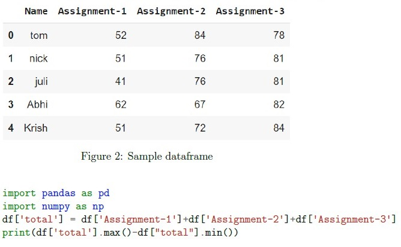
Refer the dataframe(df) given below and enter the correct output (up to 2 decimal points) for the following block of code: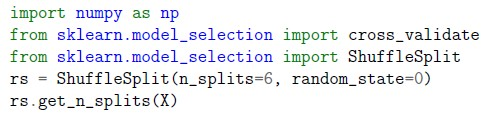
The output of the following block of code will be: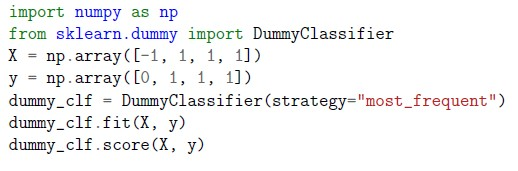
Enter the output (up to 2 decimal points) for the following block of code.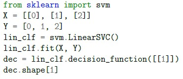
What is the correct output of the following block of code? [Note: LinearSVC implements “one-vs-the-rest” multi-class strategy]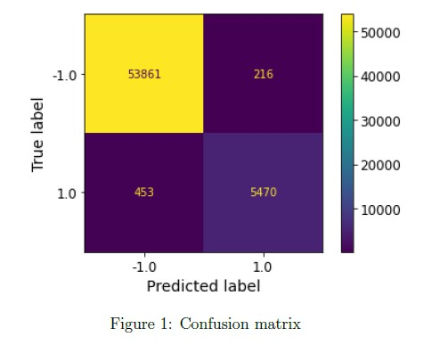
Which of the following options represents all the correct precision, Recall, and accuracy values for the confusion matrix shown in Figure 1? [Note: All 3 values should be correct in the same option]- Precision: 0.9783, Recall: 0.9289, Accuracy: 0.9909
- Precision: 0.9289, Recall: 0.9783, Accuracy: 0.9909
- Precision: 0.9909, Recall: 0.9783, Accuracy: 0.9289
- None of these.
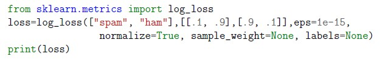
Which of the following options represents the correct output of the following block of code?- 1
- 0
- 0.210
- 0.105
- 0.233


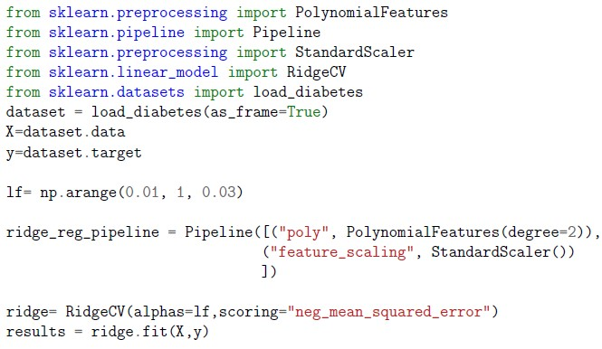
Go through the code snippet given below and answer the given subquestions.- 0.03
- 0.7
- 0.01
- 0.1
- 1
- 1
- -3000.38
- 0.528
- 0.681
Answer key
- Q1 (MCQ, 2 marks): D
- Q2 (MCQ, 2 marks): B
- Q3 (MCQ, 2 marks): B
- Q4 (MCQ, 2 marks): C
- Q5 (MCQ, 2 marks): B
- Q6 (MCQ, 2 marks): D
- Q7 (MCQ, 2 marks): D
- Q8 (MCQ, 2 marks): D
- Q9 (MCQ, 2 marks): C
- Q10 (MCQ, 2 marks): A
- Q11 (MCQ, 2 marks): A
- Q12 (MCQ, 2 marks): A
- Q13 (MCQ, 2 marks): D
- Q14 (MSQ, 2 marks): A, C
- Q15 (MSQ, 2 marks): A, B, D
- Q16 (MSQ, 2 marks): A, B
- Q17 (MSQ, 2 marks): B, C
- Q18 (SA, 2 marks): 11.95 to 12.05
- Q19 (MCQ, 3 marks): D
- Q20 (MCQ, 3 marks): C
- Q21 (MCQ, 3 marks): C
- Q22 (MCQ, 3 marks): C
- Q23 (MCQ, 3 marks): D
- Q24 (MCQ, 3 marks): D
- Q25 (MCQ, 3 marks): A
- Q26 (MCQ, 3 marks): C
- Q27 (MCQ, 3 marks): D
- Q28 (MSQ, 3 marks): B, D
- Q29 (SA, 3 marks): 15.95 to 16.05
- Q30 (SA, 3 marks): 6
- Q31 (SA, 3 marks): 0.75
- Q32 (SA, 3 marks): 3
- Q33 (MCQ, 4 marks): A
- Q34 (MCQ, 4 marks): D
- Q35 (MCQ, 4 marks): A
- Q36 (MCQ, 4 marks): A
- Q37 (MSQ, 3 marks): B, C, D
- Q38 (MCQ, 3 marks): B
Concepts this paper tests
Auto-generated summary from the source site. Handy as a checklist; the lessons above explain each idea from scratch.
Here’s a structured summary of core topics, concepts, principles, and equations essential for the "Diploma Level: Machine Learning Practice" exam, along with Mermaid knowledge graphs to visualize relationships.
1. Core Topics & Concepts
A. Data Loading & Preprocessing
Key Concepts:
sklearn.datasets: Loading built-in datasets (e.g.,load_digits,make_blobs).load_digits(return_X_y=True)returns(X, y); otherwise, returns aBunchobject.make_blobsgenerates synthetic clusters (parameters:n_samples,centers,n_features,random_state).
Feature Engineering:
Polynomial Features:
PolynomialFeatures(degree=n)generates interaction terms up to degreen.- Example: For input
[a, b], degree=2 generates[1, a, b, a², ab, b²].
- Example: For input
Text Vectorization:
CountVectorizer: Converts text to a matrix of token counts (ignores punctuation by default).TfidfVectorizer: Weights terms by inverse document frequency.HashingVectorizer: Stateless, memory-efficient (no vocabulary storage).
Scaling:
StandardScaler: Standardizes features (mean=0, std=1).MinMaxScaler: Scales features to[0, 1].
Equations:
- Polynomial Expansion: For features
x = [x₁, x₂], degree=2:
- TF-IDF:
where TF(t, d) = term frequency in document d, DF(t) = document frequency of term t, N = total documents.
B. Supervised Learning
1. Classification
##### Algorithms:
Logistic Regression:
- Loss: Log loss (cross-entropy).
- Regularization:
penalty='l1'(Lasso) or'l2'(Ridge).
Support Vector Machines (SVM):
- Linear SVM:
SGDClassifier(loss='hinge')orLinearSVC. Kernel SVM:
SVC(kernel='rbf').- RBF Kernel: Effective for non-linear, radially symmetric data.
NuSVC: Controls support vectors/margin errors via
ν(nu).- : Upper bound on margin errors, lower bound on support vectors.
- Linear SVM:
k-Nearest Neighbors (k-NN):
KNeighborsClassifier: Predicts majority class ofn_neighbors.- Regression:
KNeighborsRegressorpredicts mean of neighbors.
Naive Bayes:
GaussianNB: Assumes features follow normal distribution.ComplementNB: Suitable for imbalanced data (adjusts weights for complement class).
Decision Trees:
- Non-parametric, prone to overfitting if unconstrained.
- Hyperparameters:
max_depth,min_samples_split,min_samples_leaf. - Splitting: Always binary in
sklearn.
Ensemble Methods:
Bagging:
BaggingClassifier(e.g., withKNeighborsClassifier).max_samples: Fraction of samples per bag (e.g.,0.7).bootstrap=True: Sampling with replacement.
AdaBoost:
AdaBoostClassifierwith weak learners (e.g.,DecisionTreeClassifier(max_depth=1)).- Hyperparameters:
n_estimators,learning_rate.
- Hyperparameters:
- Random Forest: Extension of bagging with feature subsampling.
##### Evaluation Metrics:
Confusion Matrix:
- Precision:
- Recall:
- Accuracy:
- F1-Score: Harmonic mean of precision/recall.
ROC-AUC:
- AUC: Area Under the ROC Curve (1 = perfect, 0.5 = random).
- Multi-class: Binarize output (e.g., One-vs-Rest).
- Log Loss:
where is the true label, is the predicted probability.
##### Key Equations:
- Hinge Loss (SVM):
- Logistic Loss:
- L1/L2 Regularization:
2. Regression
##### Algorithms:
Linear Regression:
LinearRegression: Ordinary least squares (OLS).Ridge/Lasso:
Ridge(alpha)/Lasso(alpha)with regularization.RidgeCV: Cross-validated Ridge (inputalphasas array).
SGDRegressor:
- Supports
learning_rate='adaptive'(eta decreases if loss plateaus). - Loss options:
'squared_error'(OLS),'huber'(robust).
- Supports
- k-NN Regression: Averages targets of
n_neighbors. - Decision Tree Regressor: Predicts mean of leaf nodes.
##### Evaluation Metrics:
- MSE/RMSE:
- R² Score:
3. Model Training & Hyperparameter Tuning
##### Key Concepts:
Incremental Learning:
partial_fit: Updates model weights in batches (e.g.,SGDClassifier,Perceptron).warm_start=True: Retains weights betweenfitcalls.
Grid Search:
GridSearchCV: Exhaustive search over hyperparameter grid.- Parameters:
param_grid,cv,refit=True(trains best model on full data).
- Parameters:
Example:
params = {'n_estimators': range(10, 21), 'learning_rate': np.linspace(0.1, 1.0, 10)} gs = GridSearchCV(AdaBoostClassifier(), param_grid=params, cv=4) gs.fit(X_train, y_train)
Regularization:
- Ridge/Lasso:
alphacontrols strength (higheralpha= more regularization). - SVM:
C(inverse of regularization; smallerC= stronger regularization).
- Ridge/Lasso:
##### Key Equations:
- SGD Update Rule:
where is the learning rate.
C. Unsupervised Learning
1. Clustering
##### Algorithms:
k-Means:
- Minimizes inertia (within-cluster sum of squares).
- Requires
n_clustersas input.
Hierarchical Clustering:
- Connectivity-based (agglomerative or divisive).
- Uses linkage criteria (e.g., ward, complete, average).
##### Evaluation Metrics:
- Inertia:
- Silhouette Score: Measures cohesion/separation.
2. Dimensionality Reduction
##### Algorithms:
- PCA: Linear projection to maximize variance.
- t-SNE: Non-linear, preserves local structure (used for visualization).
D. Model Evaluation & Cross-Validation
Key Concepts:
- Train-Test Split:
train_test_split(X, y, test_size=0.2, random_state=42). Cross-Validation:
ShuffleSplit: Randomizes splits (specifyn_splits).cross_validate: Computes multiple metrics (e.g.,scoring=['accuracy', 'f1']).
- Dummy Classifier: Baseline model (e.g.,
strategy='most_frequent').
Equations:
- Cross-Validation Error:
where = number of folds.
E. Neural Networks (MLP)
Key Concepts:
MLPRegressor/Classifier:
hidden_layer_sizes: Tuple specifying layers (e.g.,(150, 100, 50)= 3 layers).solver='sgd': Uses stochastic gradient descent.learning_rate_init: Initial learning rate.
- Activation Functions: ReLU (default), logistic, tanh.
F. Text Processing
Key Concepts:
- Tokenization: Splitting text into words/tokens.
- Stop Words: Removed via
stop_words='english'in vectorizers. - n-grams:
ngram_range=(1, 2)includes unigrams and bigrams.
G. Practical Sklearn Usage
Key Points:
Shape Mismatches:
Xmust be 2D forsklearn(usereshape(-1, 1)for 1D arrays).ycan be 1D for classification/regression.
Common Errors:
ValueErrorifX/yshapes are incompatible.AttributeErrorif method doesn’t exist (e.g.,clf.score()withoutfit).
Incremental Learning:
partial_fitrequiresclassesfor classification (passclasses=np.unique(y)).
Pipelines:
- Chain transformations and estimators (e.g.,
Pipeline([('scaler', StandardScaler()), ('clf', SVC())])).
- Chain transformations and estimators (e.g.,
Graph 2: Model Evaluation & Metrics
Graph 3: Data Preprocessing
Graph 4: Unsupervised Learning
Graph 5: Neural Networks
Graph 6: Hyperparameter Tuning
3. Key Equations Summary
| Concept | Equation |
|---|---|
| Hinge Loss (SVM) | |
| Logistic Loss | |
| L1/L2 Regularization | L1: , L2: |
| MSE | |
| R² Score | |
| Log Loss | |
| TF-IDF | |
| Polynomial Features | For , degree=2: |
| SGD Update | |
| Inertia (k-Means) | |
| AUC | Area under ROC curve (1 = perfect, 0.5 = random) |
| Precision | |
| Recall | |
| F1-Score |
4. Exam Tips
Code Snippets:
- Pay attention to return types (e.g.,
load_digits(return_X_y=True)vsFalse). - Check for shape compatibility (e.g.,
Xmust be 2D forsklearn). - Default parameters: e.g.,
KNeighborsRegressoraverages targets forn_neighbors.
- Pay attention to return types (e.g.,
Algorithms:
- SVM:
loss='hinge'→ linear SVM;kernel='rbf'→ non-linear. - Naive Bayes:
ComplementNBfor imbalanced data. - Decision Trees: Binary splits in
sklearn; prone to overfitting.
- SVM:
Evaluation:
- AUC: Higher = better; 0.5 = random classifier.
- Log Loss: Lower = better (0 = perfect).
- Confusion Matrix: Recall row-wise, precision column-wise.
Hyperparameters:
- Ridge/Lasso:
alpha(higher = more regularization). - SVM:
C(lower = stronger regularization). - Decision Trees:
max_depth,min_samples_splitto control overfitting.
- Ridge/Lasso:
Text Processing:
CountVectorizerignores punctuation by default.HashingVectorizeris memory-efficient but irreversible.
Common Pitfalls:
- Shape errors: Ensure
Xis 2D (e.g.,X.reshape(-1, 1)). - Incremental learning: Use
partial_fitwithclassesfor classification. - GridSearchCV:
refit=Truetrains the best model on the full dataset.
- Shape errors: Ensure